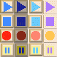

You may send custom parameters to the PlayerApplet using <param> tags inside the <applet> tag. All tags are optional unless marked "(required)".
PlayerApplet Parameter Reference
| Applet Tag |
Meaning |
Default Value |
autoBackStep
|
Specify number of seconds to rewind when playback is paused. This is handy for replaying the last few words when listening to a recording. (V1.89+) |
0.0 |
autoPlay
(example) |
Start playing the recording automatically as soon as possible after it is loaded. The user will not have to hit the Play button. |
E6E3D0 but may change. |
background
(example) |
Hex RGB value for the background color, eg. "FFFF00" for yellow. |
E6E3D0 but may change. |
bevelSize
(example) |
Size in pixels for bevel around Applet. Use zero for no bevel. |
4 |
buttonBackground
|
Hex RGB value for the background color of the text buttons, eg. "FFFF00" for yellow. See "useTextButtons". |
E6E3D0 but may change. |
| debugLevel |
Controls how many debug messages are printed to the Java console. Value="0" for terse, "1" for informative, "2" for verbose. |
0 |
foreground
(example) |
Hex RGB value for the foreground color, eg. "0000FF" for blue. |
000000 |
| ignoreMissingSample |
Do not show any error messages if the sampleURL cannot be found. Normally the user will see a popup error. Since V1.92. |
no |
| levelChangeCallback |
Specify the JavaScript function to call when "requestLevelChanges" is enabled. Just give the name of the function. ListenUp will add the parameters. (V1.93+)
|
LUPJS_LevelChanged |
| packButtons |
Move stop/pause/play buttons closer together so they are touching. |
no |
| password |
Specify password to use when authenticating uploaded audio data. Use with "userName". Also see section on security. |
null |
| putTimeOnTop |
Put the time display on the top row along with the buttons. This allows the waveform display to fill the entire bottom row. (V1.87+) |
no |
| readyScript |
JavaScript that will be called when the Applet has loaded and finished initializing. You could, for example, call a JavaScript function that enabled Play and Record buttons in an HTML FORM. This would prevent clicking on those buttons and calling the Applet before it is ready. |
null |
| requestLevelChanges |
If set to "yes" then ask that JavaScript will be called periodically as the recording is recorded or played back. ListenUp will call the function:
LUPJS_LevelChanged( currentLevel )
If you want it to call a different function then use "levelChangeCallback" parameter. The currentLevel will range from 0.0 to 1.0. It can be used to drive a VU Meter type display. |
no |
| requestStateChanges |
If set to "yes" then ask that JavaScript be called when the Applet changes state, for example when changing from "stopped" to "playing". ListenUp will call the function:
LUPJS_StateChanged( previousState, newState )
If you want it to call a different function then use "stateChangeCallback" parameter. States are "stopped", "playing", recording", "paused", or "aborted". You could use this, for example, to enable or disable Play and Record buttons in an HTML FORM. |
no |
| requestTimeChanges |
If set to "yes" then ask that JavaScript will be called periodically as the recording is recorded or played back. The frequency of this call can be controlled using the "timeChangeInterval" parameter below. ListenUp will call the function:
LUPJS_TimeChanged( currentTime, maxTime )
If you want it to call a different function then use "timeChangeCallback" parameter. When recording, maxTime is the maximum length of th recording in seconds set by maxRecordTime parameter. When playing, maxTime is the length of the recording. |
no |
| sampleURL |
The URL of a sample to be played. Supported formats include:
- 8 or 16 bit AIFF file,
- 8 or 16 bit WAV file,
- IMA ADPCM WAV file,
- Speex file ending in ".spx".
See also the loadRecording() method for JavaScript. |
null |
| showLogo |
Turns on or off display of JavaSonics logo. (This required a special "nologo" license option before V1.83.) |
yes |
| showPauseButton |
If set to "no" then do not show the "Pause" button. You are welcome to provide an equivalent HTML button and use JavaScript to call pauseAudio(). |
yes |
| showPositionDisplay |
If set to "no" then do not show the position scroll bar. If "showWaveform" is set then this has no effect. |
yes |
| showTimeText |
If set to "no" then do not show the recording time display. |
yes |
| showVUMeter |
If set to "no" then do not show the VU Meter bar graph display. |
yes |
| showTransport |
Can be used to hide the transport controls (Start/Stop/Record/Pause). You must then provide equivalent HTML buttons and use JavaScript to call startAudio(), stopAudio(), record() and pause(). Note that currently only Windows supports calling Java from JavaScript. |
yes |
| showWaveform |
Use a waveform display instead of the scrollbar to indicate position. The waveform is a visual representation of the recorded message. |
yes |
skin
(example) |
The URL of a composite image that contains the transport buttons in multiple states. A skin is a single image with 4 rows and 4 columns. The skin can be any size but the width and height must be divisable by 4.
Row 1 = play button
Row 2 = stop button
Row 3 = record button
Row 4 = pause button
Column 1 = normal
Column 2 = disabled
Column 3 = mouseOver
Column 4 = mouseDown |
Uses default skin in JAR file.
 |
| stateChangeCallback |
Specify the JavaScript function to call when "requestStateChanges" is enabled. Just give the name of the function. ListenUp will add the parameters. (V1.93+)
|
LUPJS_StateChanged |
| timeChangeCallback |
Specify the JavaScript function to call when "requestTimeChanges" is enabled. Just give the name of the function. ListenUp will add the parameters. (V1.93+)
|
LUPJS_TimeChanged |
| timeChangeInterval |
Specify how often the recording time display will be updated, in milliseconds. |
50 |
| timeTextSize |
Set font size for time display. (V1.87) |
12 |
| timeTextBold |
Use bold font for time display if "yes". (V1.87) |
no |
| useFileCache |
If set to "yes" then cache recordings and temporary files on the client hard drive. This requires the use of a signed JAR file such as "JavaSonicsListenUp.jar". It also requires the use of SUN Java or other Java that support signed Applets. Microsoft JVM not currently supported for this feature. |
"no" |
| userName |
Specify userName to use when authenticating uploaded audio data. Use with "password". Also see section on security. |
null |
| useTextButtons |
Use text buttons for the stop, play, pause and record buttons. This is mainly for visually impaired users who are using a screen reader that cannot decipher the iconic buttons. See "buttonBackground". |
no |
waveBackground
(example) |
Hex RGB value for the background color of the waveform, eg. "FFFF00" for yellow. Since V1.92. |
A lighter version of the Applet background color. |
waveForeground
(example) |
Hex RGB value for the color of the waveform, eg. "0000FF" for blue. Since V1.92. |
000000 |